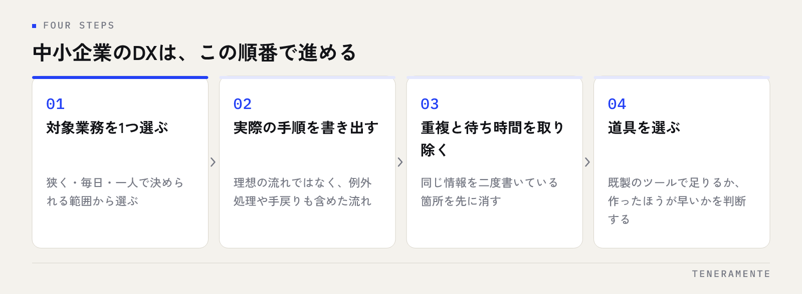

DXとは何かと聞かれたとき、中小企業の現場で通じる言い方に直すと「仕事の流れそのものを、デジタルを前提に作り直すこと」です。紙をPDFにする、ハンコを電子印にする、といった置き換えはその入口にすぎません。言葉の定義よりも、自社のどこから手をつけ、どの順番で進めるかのほうが、実務では重要になります。
📌 この記事の結論
中小企業のDXは、全社を一度に変えるものではありません。毎日繰り返している業務をひとつ選び、手順を整えてから道具を替える。この順番を守れるかどうかで、進むか止まるかが決まります。
01DXとは何か｜中小企業にとっての意味
DX（Digital Transformation／デジタルトランスフォーメーション）は、デジタル技術を使って製品・サービスや業務の進め方、さらには組織のあり方を変えていく取り組みを指します。言葉の中心にあるのは「デジタル」ではなく「Transformation（変わること）」のほうです。
大企業の文脈では事業モデルの転換まで含めて語られますが、中小企業がこの定義をそのまま持ち込むと、話が大きくなりすぎて何も始まりません。従業員数が限られた組織にとって現実的なDXは、いま人の手で埋めている隙間を、仕組みで埋め直すことです。
具体的には、同じ情報を何度も書き写している、誰かに聞かないと分からない、探すのに時間がかかる。こうした日常の詰まりを解消していく先に、結果として仕事の形が変わっている。中小企業のDXは、その積み上げとして考えるほうが前に進みます。
02デジタル化とDXはどこが違うのか
混同されやすいのが、デジタル化とDXの関係です。順番としては、デジタル化はDXの手前にある工程で、対立するものではありません。ただし、どこで止まっているかを自覚しないと、DXをやったつもりで終わります。
| 紙をなくす段階 | 仕組みを作り直す段階 | |
|---|---|---|
| やること | 帳票をデータに、やり取りを電子に置き換える | 誰が何を入力し、どこに溜まり、どう使うかを設計し直す |
| 変わるもの | 保管と受け渡しの手間 | 業務の流れと、判断に使える情報 |
| 終わりの合図 | 紙が減った | 転記と確認の作業が消えた |
| つまずき方 | PDFが増えて探しづらくなる | 対象を広げすぎて、移行が止まる |
エクセルをクラウドに置いただけでは、転記も確認も残ります。置き場所を変えることと、流れを変えることは別の仕事です。この線引きを社内で共有しておくと、「うちはもうDXしている」という思い込みを避けられます。エクセル運用の限界の見分け方はエクセル管理の限界とシステム化の判断で整理しています。
03中小企業が最初に手をつける範囲
範囲を決めるときの原則は「狭く、毎日、一人で決められる」の3つです。全社横断のプロジェクトにすると、調整だけで数か月が過ぎます。
狭くというのは、業務をひとつに絞るという意味です。受注処理全体ではなく「受注メールから注文一覧への転記」まで落とします。始まりと終わりがはっきりしている単位なら、変わったかどうかを自分たちで判定できます。
毎日というのは、頻度の条件です。年に数回の作業を改善しても、効果を実感する前に手順を忘れます。毎日触る業務ほど、小さな改善が大きく返ってくるのは、回数がそのまま効いてくるからです。
一人で決められる、は意思決定の条件です。複数部署の合意が要る範囲を最初に選ぶと、承認待ちの間に熱量が下がります。最初の一件は、決裁の線が1本で済む場所から選んでください。
04DXを進める順番
順番を飛ばしたときに起きることは、だいたい決まっています。ツールを先に入れると、業務の手順が曖昧なまま設定だけが増え、使われない機能が残ります。

進め方としては、まず対象業務の手順を実際にやっている順番で書き出します。理想の流れではなく、例外処理や手戻りも含めた実際の流れです。次に、その手順から重複と待ち時間を取り除きます。ここまではデジタルの話が一度も出てきません。
手順が整ってから、ようやく道具を選びます。既製のツールで足りるのか、作ったほうが早いのか。この判断は、手順が言葉になっていないとできません。道具選びは、設計の結果であって出発点ではないという感覚を持てると、検討が速くなります。AI活用まで含めた進め方はAI業務改善の進め方にまとめました。
05最初の対象業務を選ぶときの判断基準
候補が複数あって迷う場合は、次の観点で並べ替えると順位がつきます。
- 頻度：毎日か、週に数回か。回数が多いほど優先
- 所要時間：一度の作業にかかる時間。長いほど効果が見えやすい
- 転記の有無：同じ情報を二度以上書いている作業は、真っ先に候補になる
- 属人性：担当者が休むと止まる業務は、仕組み化の価値が高い
- 例外の少なさ：例外パターンが多い業務は、最初の一件には向かない
- 失敗したときの影響：止まっても業務全体が止まらない範囲から始める
5番目と6番目は、優先度を下げる方向の基準です。効果が大きくても、例外だらけの業務や、失敗が取引先に直接届く業務を最初に選ぶと、慎重になりすぎて進まなくなります。
候補を出すときのコツ
担当者に「面倒な作業は何ですか」と聞くより、実際の作業を横で見せてもらうほうが早く見つかります。本人が慣れてしまっている手間ほど、申告には出てきません。
06中小企業のDXが止まるときの共通点
止まった取り組みには、共通する形があります。
ひとつは、目的が「DXをやること」になっている場合です。補助金や周囲の動きがきっかけだと、手段が先に決まり、解決したい困りごとが後から探されます。この順番だと、導入した時点で目的が達成されてしまい、運用が続きません。
もうひとつは、現場が入らないまま決まる場合です。毎日その画面を触る人が検討に加わっていないと、入力の手間が増える設計になりがちです。効率化のはずが現場の負担増になる典型は、ここから生まれます。
三つめは、担当者が一人だけの場合です。異動や退職で、設定を触れる人がいなくなります。最初から二人で進める、あるいは設定の内容を書き残しておくだけでも、続きやすさが変わります。
07進み具合の確かめ方
DXは成果が見えにくいと言われますが、対象を絞っていれば確かめ方は単純です。着手前に、その業務にかかっている時間と、一か月あたりの発生件数を記録しておきます。比べる相手は他社ではなく、着手前の自社です。
数字に出ない変化も記録に値します。担当者が休んでも回ったか、新しく入った人が一人でできるようになったか、探す時間が減ったか。属人性が減ったかどうかは、時間短縮より長く効く成果です。一件が回ったら、同じ手順で次の業務に移ります。範囲を広げるのはこの段階からで構いません。
08まとめ：DXは言葉ではなく、順番の問題
DXとは何かという問いに、中小企業が完璧な定義で答える必要はありません。必要なのは、毎日繰り返している業務をひとつ選び、手順を整え、そのうえで道具を替えるという順番を守ることです。範囲を狭く取るほど、終わりが見え、次に進めます。何から手をつけるか自体を決めかねている段階なら、社内へのAI導入、最初の一歩の決め方も判断の材料になります。
TENERAMENTEは、業務の棚卸しから設計・開発・公開後の運用までを一貫してお手伝いしています。既製のツールで足りる部分と、作ったほうが早い部分を切り分けるところから始められるよう、対応できる範囲をサービス一覧にまとめました。どこから着手すべきか迷っている段階でも構いませんので、ご相談からお気軽にお声がけください。